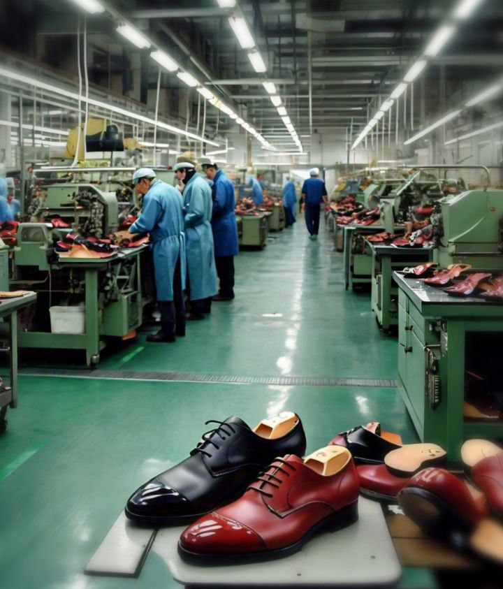

This was a very interesting project of a footware manufacturing client, a revolutionary eco-friendly footware startup seeking investment opportunities for its
growth journey. The engagement proposal is to develop a financial moddel that shows the company's projected financial performance over the next five years. Our financial analysis and valuation showed that the SME has potentials for growth.The deliverables includes sensitivity analysis of base case of 100%, best case of 120% and worst case of 80%.


This project is in two parts, the first part is excess loan charges forensic examination, the second part is on investment decision. Moulin Pooch Co. had oustanding loan of $450,000 to be repaid over six years. The task here is to calcualte the monthly loan repayments, determine the balance at the end of the 3rd year and establish if the bank's monthly charges are accurate or not. Also, the company had two potential investment opportunities. The task here is to calculate as a financial analyst, the NPV of the two options and Provide a recommendation for which scenario is better for Moulin Pooch Co. Our recommendation was for the company to invest in option 1.This is simply because, after six years of investment, the $200,000 investment will be recouped back in the 5th year and the NPV as at the end of the 6th year will be $143,346 as against the investment of $300,00
that will be totally recouped in the 6th year and with a sum of $37,471 as NPV of the store, even though the capital invested was higher.
This is about a bakery company that is desirous of getting it right from day one. The task is requirement is to develop a financial model and forecast for the first five years of the company's operation as well as it's valuation. It was establishd that, over the projected years, the Gross Margin is ranging between 54%-57%, Net Profit Margin is within 17%-19%, while Return on Equity is within 71%-137%. The business was valued at =N=689,769,798 using a DCF valuation model and discounted by a WACC of 18%.
On this project, the task is to use IMF data and forecast China and US GDP between 2000 to 2060 and predict what year China's GDP might pass US GDP. Our prediction showed that China's GDP will surpass US GDP in 2042 and this was done with 99% precision using Excel treadline and Display R Squareed.

Cross bridge estate financial planning,modelling is a financial analytics project to predict the company's performance over the first five years of it's operation and to have better chances of investment opportunities. Of course, the business is viable with a Gross Profit Margin of 17%-34%, Net Profit Margin of 4%-14% and Return on Equity of 75%-119%. The business valuation stood at =N=4.2Billion, with a WACC of 18%,using a DCF method.

This project centers on preparation of cash flow projection for a real estate construction. The client has a large expanse of land in a water-lodged area. It was a sight and service, and we were engaged to prepare the cash projection to assist in decision making, and in other not to operate at a loss. The work was professionally handled and the customers were very happy.Kindly click on "check it out" below to read more about this project.
Moulin Pooch Co. Is A Seasonal Products Merchant. Based On the Client's Request, We Diagnosed the business By Using Trend analysis of Product Performances. We Also Established Key Insights by analyzing Store Performance, Profit by Each Store, Comparison of Physical and Online Store, Competitors' Analysis and Financial Performance. We Also analyzed Profitability, Current and Debt Ratio.